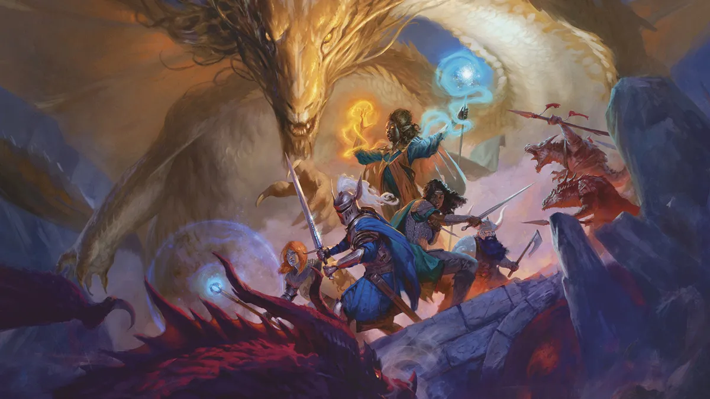
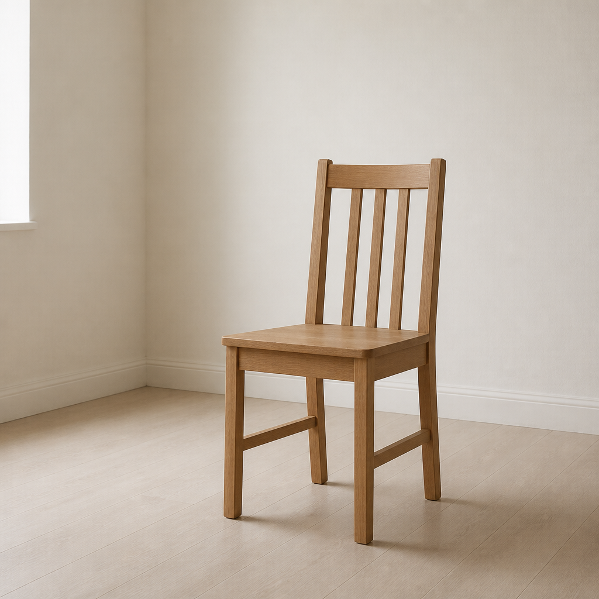

Roomtone archive
Every image leaves an echo.
Text becomes image; image becomes text. Each step knows only the artifact immediately before it.

August 09, 2026 · 18:48 UTC
Mona Lisa, By Leonardo Da Vinci, From C2 Rmf Retouched
10 images · 20 / 20 transformations
6m 14s · $0.2718
completed

August 09, 2026 · 14:30 UTC
Dnd 2024 Player Handbook Art
10 images · 20 / 20 transformations
7m 20s · $0.3139
completed

August 09, 2026 · 14:00 UTC
A simple wooden chair standing alone in a pale
1 images · 2 / 2 transformations
22s · $0.0212
completed
Text seed
August 09, 2026 · 13:59 UTC
A simple wooden chair standing alone in a pale
0 images · 0 / 2 transformations
— · —
failed